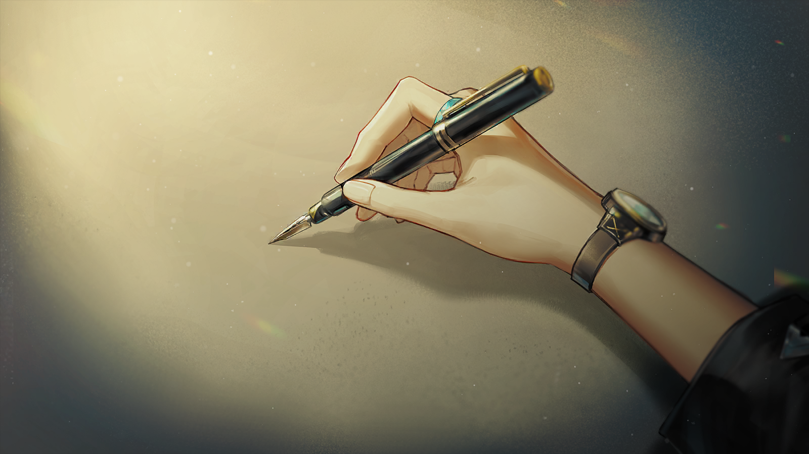
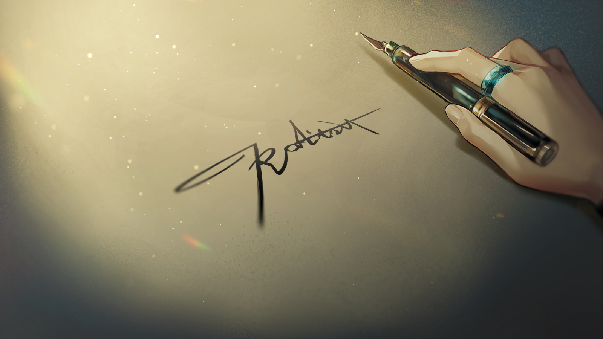
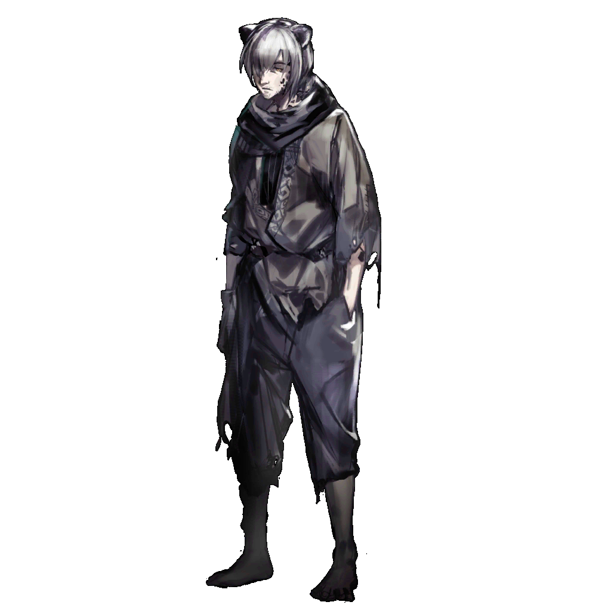

在结晶时代之前，甚至是更久远的时候，
乌萨斯流传的神话中有一位名为吉伊哈克的巨人。
巨人身形之庞大远远超出了人们的认知，他举手投足间塑造了这片大地的形状，
巴顿平原是他步伐踏过的痕迹，远无边际的鲁多卡缅尼山脉堪堪够他枕眠。
神话中巨人的形象难以用善神或者恶神来定义，他就是这样巨大而单纯，只可供人们仰望的存在。

难以用巧合解释的是，这片大地上不同文化地区的神话中，往往都存在类似于吉伊哈克这样的“庞然巨物”。
这些相似的神话似乎反映着人类潜意识中的某些共性——
无论何时，人们总会发自内心地呼唤某种伟力，某种与自身代表的一切渺小相对立的、抽象或具体的巨大存在。
人们习惯对想象中的巨物顶礼膜拜，并且在现实中寻找它的投影。
可是当它的确以某种形式于人们视线中彰显时——
它必将压垮一切温和的幻想。

不满的声音
说起来，我觉得鲍里斯一定是个疯子。
不满的声音
你看到他面见元帅的时候那副傲慢丑陋的表情了，不过是这些年赚到了一点金币，他就敢这样骄横。
不满的声音
如果他再富有些，我猜他甚至敢不向陛下行礼。
急躁的声音
说到底，在他看来元帅根本不敢对他怎么样，甚至只要元帅开出的价码不符合他的心意，他随时可以转身投向第三集团军。
急躁的声音
呵，有退路的人永远都是这样。
不满的声音
目光短浅的商人，坐拥这样的宝贝也只会考虑怎么用它来填满自己的钱袋子，根本没想过它真正的价值！
不满的声音
也难怪他缺少对乌萨斯军人应有的尊重，他们根本不明白乌萨斯的土地是建立在什么之上的——许多人都缺少对我们的尊重！
不满的声音
如果我是元帅，我会直接划开那个懦夫的喉咙，用他的血在协议上摁手印。
不满的声音
呵，如果我是元帅......我应该指挥军队战斗到底，直到每一个乌萨斯人都学会尊重我们。而不是像现在这样......被扣上失败者的帽子。
急躁的声音
哦......别再说那些蠢话了！
急躁的声音
你真的相信，元帅打心底里支持过六、八那两个集团军的白痴？
急躁的声音
他们的行为从一开始就注定是要失败的，凭他们手里那一点火炮和战舰还撬动不了乌萨斯，多十倍都不行。
急躁的声音
他们和那些商人本质上没有区别，他们都不知道乌萨斯的威严来自何处——但元帅早就看清了这一点。
急躁的声音
所以庆幸吧，现在你还能在任务中发牢骚，而不是被送去远北和感染者一起变成石头。
不满的声音
你这是干什么？
急躁的声音
执行命令，确保没有活口。
不满的声音
你至少可以问问他！让他帮我们把剩下的人找出来！
急躁的声音
没必要再浪费时间了，如果这些穿白大褂的愿意配合，我们今天不会在这里。
急躁的声音
我看到了，那边桌子下面还藏着一个。
极度恐慌的声音
放过我，放过我——！！
极度恐慌的声音
求求你不要杀我！你们想问什么都可以——
不满的声音
他可是说了愿意配合了。
急躁的声音
相信我，自己动手更快。
急躁的声音
接着找，不会只有这么点人的。
急躁的声音
清点好人数，确保不会有人活着出去，这很重要。
不满的声音
我开始有点烦躁了，这里一点都不通风，血真臭，我的靴子都要黏住了。
不满的声音
啊......找到了。
不满的声音
这里还有一个。
米诺斯古早的哲人认为，创造是人类的特权，亦是本能。
人们从劳动中总结经验，继而转变为具体或抽象的造物，用以应对自身存在面临的难题。
造物满足人们的需求，抚慰人们的恐惧，同时也反映人们的审美、道德。
人类的任何一点创造，都是其自身特性的体现——
或许造物主对人类的创造也不外乎此理。
而在人们创造过的，最能反映人类自身善恶本性的造物当中......
“国家”，这个巨大的概念，一定有一席之地。
......

畏缩的研究员
所长，他们已经闯到D区了！
畏缩的研究员
我听到了......有武器的声音......他们在杀人......他们是在杀人吗？

凯尔希
伊利亚，还有多长时间？
伊利亚
......四十分钟。
伊利亚
已经尽力了，封锁程序完成，还要四十分钟。
畏缩的研究员
可是我们一定要等到它完全关闭吗......
伊利亚
不然呢？！把这个东西完完整整地留给军队，交到那些屠夫的手里，好让他们可以去轻而易举地制造更多屠杀？
伊利亚
*激烈的乌萨斯粗口*！我活着度过的这一生已经够失败了，我不想在死后还变成一个杀人者的帮凶！
伊利亚
都太迟了......
伊利亚
可这群该死的刽子手怎么能反应得这么快，他们怎么可能这么快摸清研究所内部的情报......
伊利亚
有叛徒......所长，一定有人出卖了研究所的情报。
伊利亚
是谢尔盖吗......早在他试探我的时候我就该意识到的。
伊利亚
*乌萨斯粗口*，一定是他......怎么偏偏是他，他原本可以做一个好人的......

凯尔希
冷静点，伊利亚。这个时候去想这些事没有任何益处。
凯尔希
专注眼前的事，我们都还有机会再挽回一点什么。
伊利亚
所长......我们是不是......真的来不及了。
伊利亚
您收到了我的警告，不该回来的，即使您回来了，也还是来不及——

凯尔希
......
凯尔希
伊利亚，你带大家离开。
伊利亚
离开？我们还能去哪？
凯尔希
往北去，去泰梅尔，那里临近第三集团军的驻地，安德里安无论如何也不敢直接在那里展开搜捕。
凯尔希
你们可以先躲藏起来，远离城市，避免与任何政府势力接触，也不要相信第三集团军可能给出的保护你们的承诺。
凯尔希
快走吧，我留下来。
伊利亚
......
凯尔希
伊利亚？
伊利亚
......不，我留下来。
凯尔希
伊利亚。
伊利亚
我不会逃跑，我做不到，您不该把这些同僚的性命都托付给我！
伊利亚
凯尔希所长......老师，这片大地需要您远甚于我，该走的是您才对。您本来就不该在这时候回来！
伊利亚
就算您现在想办法藏住了体表的源石，那些家伙也会发现您其实是感染者这件事，您会遭受比痛快的死亡更恶劣百倍的对待——
伊利亚
何况现在也只有您能带这些无辜的同僚找到生路，您不能推辞。

凯尔希
可你也有必须要活下去的理由......柳德米拉，你的女儿——
伊利亚
我希望能够拜托您。
伊利亚
请您带她离开，离开这个国家，越远越好......呵，我原本还期待过您可以教育她一段时间的，不过，算了。
伊利亚
您不用把今天发生在这里的事情告诉她，不会有好处的，让她用自己喜欢的方式探索这片大地吧。
凯尔希
我向你保证，会让她远离乌萨斯。在她有能力为自己的行为负责之前，她都会是安全的。
凯尔希
我也向你保证，你们在这里所做的一切，都不会白费。
伊利亚
那就够了......
伊利亚
......真有意思，我们之前开启这个石棺的选择，现在保留它的选择，到底哪一个才算得上正确。
凯尔希
我们做了自己认为正确的事，这个答案，也许得柳德米拉，甚至是她的孩子才能够回答。
伊利亚
说的也是......走吧。

凯尔希
......
凯尔希
再见，伊利亚。

第四集团军士兵
你就是最后一个了？
伊利亚
你是说最后一个什么？
伊利亚
研究所里的最后一个活人？是的；这个国家最后一个鄙视暴力的人？未必。
第四集团军士兵
你留在这里，你对石棺做了什么？
伊利亚
哦，大约在十秒前，这座石棺的核心功能装置已经被完全封锁起来了。凭你们的本事，想要再启动它得花上一百年。
伊利亚
你们——第四集团军的先锋刽子手？你们可以回去告诉安德里安了，他想要把这个大家伙变成开疆拓土的武器的计划破产了。
伊利亚
很可惜，威名赫赫的安德里安元帅又一次失败了。他的军队没能征服一个小小的研究所，甚至是一个可悲的研究员。
伊利亚
好了，现在你们可以行使剥夺我的性命的权力了。
第四集团军士兵
哼，了不起的硬骨头......
第四集团军士兵
如你所愿。
对乌萨斯这个国家，乃至于这片大地而言，“石棺”都是超越这个时代的发现，
我也曾对它寄予过不合时宜的期待，最终发生在我面前的惨剧即是对我的惩罚。
但是研究所中那些杰出学者的无辜牺牲，
一定是对这个国家野心的惩罚，
即使惩罚的结果或许在很长时间以后才会被察觉。
在此时此刻，我只能给予您一些忠告。
如果您不愿意再卷入无休止的政治纠纷或是遭遇幸存者的报复，
如果您认为这片大地上依然有一些值得我们从裂兽的爪牙下竭力保护的珍贵事物——
请您保留这封信件，也请阻止集团军对研究所幸存者的追杀。
这并非威胁，也非无助的请求。
我希望您能基于对自身利益的考量，以及内心的良知，做出正确的选择。
致 谢列梅捷沃·鲍里斯侯爵阁下

1077年，在乌萨斯的东南一隅，发生了这样一起流血事件。对于刚刚经历过严重内乱的帝国，这甚至算不上一场多么引人注意的风波。
也许直到百年后，历史学者再从故纸堆中重新审视那段波澜壮阔的历史时才会发现，发生在切尔诺伯格研究所中的事，是一个时代的缩影，也是一颗种子。
尽管此刻，它还深埋在乌萨斯的冻土之下，以待发芽。
年轻的声音
......这是哪儿？
年轻的声音
军事法庭呢？审判呢？
年轻的声音
为什么你们要领我来这里？我的部下又在哪里？
不耐烦的声音
闭嘴。
年轻的声音
除非你杀了我。
不耐烦的声音
你是死刑犯。无论是现在杀你还是之后杀你，都没什么区别。
不耐烦的声音
可上面的大人好像暂时腾不出手来处理你这个叛乱头子，所以......
不耐烦的声音
你就先待在这里，听着其他房间，听着你那些部下，都是怎么一个个沉默下去的吧。
年轻的声音
我是军人，不是罪犯。我的部下也不是！
不耐烦的声音
从你狂妄到决定对元帅举起反旗的那一刻起，你们整个兵团就已经不再属于光荣的第四集团军了。
年轻的声音
我做了正确的事。那些被你们蔑为叛军的战士都知道，每一个拥有良知的乌萨斯人都会知道，这是正确的事。
不耐烦的声音
不。雅科夫·彼得洛夫上尉。
不耐烦的声音
你只是做了蠢事，还要将你的亲人和战友也连累。
沉默的男孩
......
沉默的男孩
妈妈，请先坐下来吧......您在发抖。
沉默的男孩
那些军队的人都已经离开了。

恍惚的女性
军队，雅科夫......
恍惚的女性
是你吗，雅科夫？
沉默的男孩
......
恍惚的女性
你回来了？
恍惚的女性
可现在苹果花都还没开，远不到夏休的时候。
恍惚的女性
安德里安元帅待你如何？是不是常常把你带在身边？那些我托人带给你的衣裳鞋袜，穿着都还合身吗？
恍惚的女性
我的眼睛实在看不清了，没法亲手给它们绣上名字......但索菲亚帮了忙。你从前最喜欢她的手艺——
恍惚的女性
......索菲亚？
沉默的男孩
妈妈。
恍惚的女性
你不是索菲亚。
沉默的男孩
我也不是雅科夫。我既不是兄长，也不是姐姐。
恍惚的女性
你是谁？你为什么在我的家里？来人——
沉默的男孩
妈妈，我是图林，您久未归家的小儿子。您还记得我的，对吗？
沉默的男孩
佣人都已经被遣散了。管家也已经离开了。
恍惚的女性
你说什么？
沉默的男孩
雅科夫兄长入狱，索菲亚姐姐已经出嫁，却还是为了救他在圣骏堡奔走。她需要用金钱去疏通那些滞塞的关卡，我们必须帮忙。
沉默的男孩
况且，我们也不能令无辜的人，被迫负担与我们相同的惩罚，不是吗？
沉默的男孩
......唉。
沉默的男孩
无论如何，请听听我说的话吧，妈妈。即使您从前从未听过，但这是雅科夫兄长从狱中写来的信。
沉默的男孩
一起听听看吧......
男孩说着，展开手中的信件，却只看到一张白纸。
刹那间，他的面色就变得和手中的纸张一样苍白。
沉默的男孩
......
恍惚的女性
雅科夫......雅科夫不是在军队里吗？
沉默的男孩
军队来过了，妈妈。
男孩把白纸一点点对折，当作一个缓慢的、思索的过程。
而后，他将一枚窄小而整齐的方块，塞入胸前原本应该放着手帕的位置，紧贴着心脏。
沉默的男孩
他们说，因为雅科夫兄长在第四集团军军队哗变事件中所处的位置......
沉默的男孩
彼得洛夫家族已经被判剥夺世袭爵位，贬为庶民，流放到北原矿区第九矿场。
沉默的男孩
明天我们就必须动身了。

绝望的感染者
埋了老彼得，我们又该上路了。
绝望的感染者
埋葬了孩子，埋葬了妻子，埋葬了父母......之后还要这样埋葬多少人？
绝望的感染者
你在做什么，写信？给你母亲的？
沉默的男孩
不......不是信。只是把我所见所想的记下来，有机会的话，我希望有更多人看到。
绝望的感染者
真羡慕你还有这样的闲力气。
绝望的感染者
我走不动了。我们甚至都还没能走到北原的范围以内。
沉默的男孩
从奥姆斯卡出发，我们才走了三个月。
沉默的男孩
等我们抵达北原的矿场，应该已经是第二年的春天了。
绝望的感染者
春天......哈哈！春天！
绝望的感染者
你这小子，竟然说北原有春天......
沉默的男孩
是的，春天。只要我们能够抵达。
绝望的感染者
只是因为你母亲是个瞎子，头脑也不清楚，逃过了一劫。
绝望的感染者
她不用吃这流放的苦楚，你也不用把她像个无名之人一样埋葬，你才能乐观得像个疯子一样。
绝望的感染者
但是，凭什么......
绝望的感染者
究竟凭什么？
绝望的感染者
凭什么就算同样是被流放的罪犯，像你这样的家伙就能受到优待，不用眼睁睁看着亲人一点点失去呼吸，一点点变得冰凉？
绝望的感染者
就因为我在变成感染者之前，只是个随处可见的搬运工吗？
绝望的感染者
我究竟做错了什么——你们又究竟做对了什么？
感染者低声呢喃着。他比任何人都想大声将这些话语喊出，却困于不远处那些押送者的残酷目光。
少年摇了摇头，往感染者的方向走得更近了些。
沉默的少年
......我享有优待，的确，而这甚至并非出自我自身的努力，实在惭愧。
沉默的少年
但你提出的，也正是我想知道答案的问题。
绝望的感染者
什么......？
沉默的少年
为何有人生来优越，有人生来卑贱？究竟是什么使同为人类的存在彼此对立至此？要怎样做才能改变这样的现状？
沉默的少年
我不知道。
沉默的少年
但直觉告诉我，至少，我们应该先活下来，站起来。
沉默的少年
站在一起，有了力气，才能继续思考问题所在，才能想出办法去改变些什么。
绝望的感染者
你到底在说什么——
男孩突然抬起头，对上感染者惶惑的眼神。
沉默的少年
您就当我是在说胡话吧。
沉默的少年
我认为，像你们这样一无所有的人，其实才是这片大地真正的主人。
绝望的感染者
......
沉默的少年
至于现在，请来我的背上吧，先生。至少我还有力气，还能背着您走一段路。

利索的矿工
头儿！
利索的矿工
我们都收拾好了，随时可以启程。
若有所思的青年
......唔。
利索的矿工
头儿？
若有所思的青年
啊——哦！对，我们要出发了。
若有所思的青年
谢谢你来叫我，我也已经打包好——
若有所思的青年
呃。
利索的矿工
您又把这些东西翻出来看了？乱糟糟的，这可不行。我来帮您收拾吧。
若有所思的青年
谢谢！
利索的矿工
我到矿区晚，从没见到过给你寄信的这个人。他真的都离开矿区了，还一直写信过来吗？
若有所思的青年
是的。
利索的矿工
我第一次听说有人这么眷恋矿区生活的。
若有所思的青年
也许，他眷恋的不是矿区，而是在这里生活的人们。
若有所思的青年
我记得，当赦免政治犯的消息传到北原时，他的第一反应不是欣喜，而是担忧。
若有所思的青年
担忧我们这些人无法同他一起离开，担忧自己的想法还没能得到验证......
利索的矿工
但最后他还是走了。
若有所思的青年
当然。他说他要走遍乌萨斯，我们如今也要离开这里了，不是吗？
利索的矿工
那我们就快出发吧，头儿。
利索的矿工
对了，我一直听他们这样叫你，也就跟着叫了。但我总想着，您得有个自己的别的名字，是不是？
若有所思的青年
原来我没有告诉过你吗？
若有所思的青年
嗯......图林。你可以叫我图林。
利索的矿工
行啊，“图林”，这名字好听。来，我拉你起来。
图林
谢谢......
图林
嗯，我们还是快些动身吧。
图林
趁雪还没下大，也趁那些坐在暖和房子里的大人物们还没改变主意。

严肃的军人
（翻阅报纸）

紧张的近侍
......
严肃的军人
（合上报纸）
紧张的近侍
......！
严肃的军人
您好，先生。请问可以给我一份日期更新些的报纸吗？
紧张的近侍
呃，这——这可能需要申请。
紧张的近侍
休憩处的报纸和书籍都是每日由专人负责更新维护的，我没办法从随便什么地方变一份出来给你。
紧张的近侍
而且你是感染者，虽然被放进来了，但我不确定你是否被允许阅读这些东西——

匆忙的贵族
咳！
紧张的近侍
瓦西里先生——将军阁下？
匆忙的贵族
......在这里叫我副议长就好。感谢你的帮助，接下来这里由我负责。
紧张的近侍
什么？这位先生——这位先生难道是您的客人？
紧张的近侍
天、天哪，我可真该死！对不起，尊敬的先生，我刚才竟然对您说了那样的话——
严肃的军人
无妨，你说的是事实。
严肃的军人
我的确是感染者。
紧张的近侍
那报纸，您，我、我——
匆忙的贵族
唉，你就听我的，把这里交给我来负责吧！

严肃的军人
......
匆忙的贵族
......

严肃的军人
“将军阁下”？

匆忙的贵族
可别用它来笑话我啦......我能不能当上将军，您还不清楚吗？
严肃的军人
你从前不是这样妄自菲薄的性格，瓦西里。

瓦西里
您从前也不像现在这样好说话呀，“长官”。
严肃的军人
......现在站在你面前的，只有一个感染者，一介武夫，再没有近卫军的教官了。
严肃的军人
你应该还记得我的名字，叫我赫拉格吧。
瓦西里
好吧，赫拉格先生。再次回到圣骏堡的感觉怎么样？虽然现在的确不是一个旅游的好时候。
赫拉格
这里比我想象的要安静些。许多事都变了，甚至看不到太多上个时代的痕迹。

瓦西里
是啊，很多事都变了。谁又能轻言这样的变化是好是坏呢。
瓦西里
商人们变得更富有，城市都跟着变得漂亮了。可人们也越来越不重视谦逊，还有别的什么美德了。
瓦西里
您或许听说了，我们的陛下最近还要组建“公民大会”，把政策的决定权交到圣骏堡随便哪个市民的手里去。
瓦西里
现在人们可以说，贵族们终于连最后一点工作都不用做，要交给平民了。

赫拉格
看来你对此事是不赞同的。
瓦西里
赞不赞同又能有什么用呢，如果有人，能解决摆在眼前一桩桩一件件的难题，无论是谁都好啊。
赫拉格
这可不像是实权在握的副议长会说的话。
瓦西里
我从来也不是什么锋芒毕露的人，您是知道的呀。
瓦西里
说起来，进城的时候，他们竟然没有把您的刀收缴起来？
赫拉格
哦，这个。只是记录在册了，没有受到太多额外的“关照”。也许因为它只是个仿制品，并未开刃，就连废铁也算不上。
瓦西里
真刀呢？
赫拉格
托付给我信任的人了。
瓦西里
信任的人吗......
赫拉格
我听说你也有一个女儿。
瓦西里
是啊，一会儿有机会的话，我会介绍她给您认识。她听过您的事迹，对您很崇敬。
瓦西里
应该说，不止是她，如今的近卫军里还有不少人记得您的名字。
瓦西里
我们安定了有些年头，但那些故事依然像一面旗帜。等您方便的时候，我可以请您去近卫军的军校里坐坐。
赫拉格
我为你对那些牺牲的铭记表示感谢，可我的确无意再被视作什么旗帜。
赫拉格
我此行另有目的，想必你已经对罗德岛驻圣骏堡办事处的建立有所耳闻。
瓦西里
我知道，我还替议长签署了好些文件呢。
瓦西里
唉......就算我们对感染者的政策有所松动，现下关于感染者的矛盾依然尖锐。
瓦西里
不过，关于您——我很乐意借此机会，在圣骏堡为您恢复名誉。
赫拉格
我并不需要乌萨斯恢复我的身份和名誉。
瓦西里
那您需要什么呢？
赫拉格
就当下而言，罗德岛的需要，就是我的需要。
瓦西里
更具体的，您的意思是——
赫拉格
“请转告维特议长，罗德岛的指定人员已应约前往圣骏堡。”
赫拉格
算算时间，他们应该已经到办事处了。
瓦西里
啊......
慌张的士兵
议长——
慌张的士兵
议长在这里吗？！
瓦西里
我是副议长，你要做什么？
慌张的士兵
我有、我有报告！
慌张的士兵
第、第一集团军——
士兵磕磕绊绊地说出一个名词，却在眼神扫向一旁的赫拉格时猛地怔住了。
瓦西里摇了摇头，向他示意无事。

瓦西里
第一集团军怎么了？
慌张的士兵
第一集团军研发的新型大规模杀伤性武器，试、试爆成功了！
瓦西里
这有什么问题？
慌张的士兵
问题是，这武器没有使用源石，或者之前我们使用过的任何能源作为动力！

瓦西里
......你说什么？
赫拉格
......